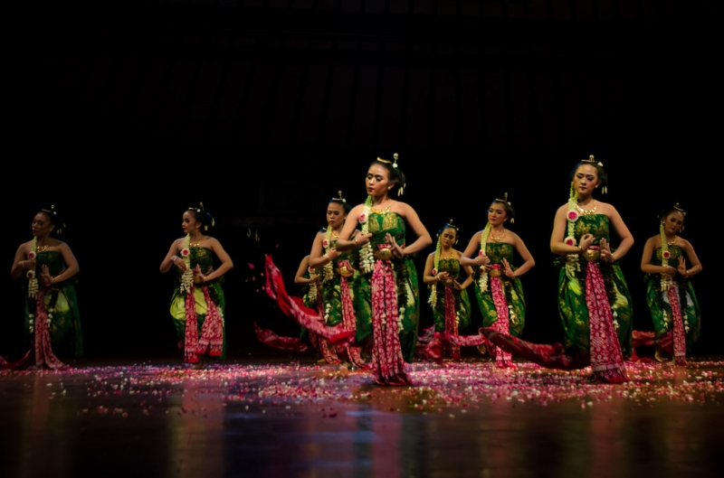

Bedhaya Tari Tradisional Yogyakarta
Kategori: Tarian

Tari Bedhaya merupakan tarian keraton yang sudah sangat tua, dipentaskan dalam acara resmi oleh tujuh atau sembilan penari wanita yang belum menikah dengan irama lembut dan gerak gemulai. Koreografi tarian Bedhaya merupakan formasi kelompok dengan pola dasar asimetris. Jalan cerita dibacakan seorang narator (dalang) dalam bentuk prosa dan nyanyian dengan diiringi paduan suara (gerong) serta gamelan. Tari Bedhaya yang tertua adalah Bedhaya Semang yang diciptakan oleh Hamengku Buwono I pada tahun 1759, dengan cerita perkawinan Sultan Agung dari Mataram dengan Ratu Kidul yang berkuasa di samudera Indonesia.
- Penari dalam Tari Bedhaya dituntut untuk berpuasa, masih gadis dan dalam keadaan suci (tidak sedang datang bulan). Sekarang ketentuan tersebut tidak seketat itu, tetapi akan tetap dilakukan apabila tarian tersebut dipertunjukkan untuk penobatan raja dan dilakukan di dalam keraton.
- Tari Bedhaya dianggap sebagai salah satu atribut sang raja, yang pada gilirannya juga berfungsi sebagai sarana untuk melegitimasi kekuasaan dan kewibawaan para sultan atau sunan.
- Dahulu yang boleh membawakan tari Bedhaya hanya para sentana dalam (anak cucu raja), namun sekarang setelah mengalami perkembangan, tari ini dapat pula ditarikan oleh siapapun yang berminat dan mampu melakukannya. Hal ini dapat dilihat dengan adanya keterbukaan dari pihak keraton yang bersedia menerima pihak-pihak luar keraton yang ingin belajar dan mendalami tari Bedhaya.
- Waktu yang diperlukan untuk menarikan sebuah tari Bedhaya pada jaman dahulu adalah kurang lebih 3 jam. Sekarang setelah dilakukan pengemasan, maka waktu yang dibutuhkan adalah 1 jam sampai 1 1/2 jam. Meskipun demikian kaidah-kaidah tari serta makna simbolik filosofisnya tetap tidak berubah.
- Ada beberapa macam Tari Bedhaya, antara lain: Bedhaya Ketawang, Bedhaya Semang, Bedhaya Sabda Aji, Bedhaya Angron Sekar, Bedhaya Herjuna Wiwaha, Bedhaya Sumreg, Bedhaya Sang Amurwabhumi, Bedhaya Pangkur, Bedhaya Duradasih, Bedhaya Mangunkarya, Bedhaya Sinom, Bedhaya Endhol-Endhol, Bedhaya Gandrungmanis, Bedhaya Kabor dan Bedhaya Tejanata.
- Busana dalam tari Bedhaya menggunakan dhodhot ageng pengantin Jawa yang disebut basahan. Menggunakan gelung bokor mengkurep yang berukuran lebih besar dari pada gaya Yogyakarta.
https://www.sumber.com